The mission in 30 seconds
TESS watches each patch of sky for about 27 days at a time. A close-in planet blinks repeatedly — easy. A far-out planet may blink just once, which looks exactly like camera noise or a flickering star. But TESS revisits stars years later: catch a second blink and the pair becomes real evidence — if you can prove both blinks came from the same planet and work out what orbits fit.
Locked definitions, blink records, orbit math. Demonstrated: alias lists, leak guards, 19 checks.
Full chain on made-up data: match blinks, list orbits, cross off 22 of 33 suspects.
Same chain on genuine TESS recordings of 3 known planets. All true pairs match.
Software that spots blinks itself, no star maps needed — finds 34 of 39 real blinks.
618 true pairs vs 3,037 false alarms ranked — every true pair on top, randoms scoreless.
A small Siamese matcher now runs beside the deterministic baseline with TIC-level holdouts and an explicit stop/go decision.
Artificial blinks are recovered from real development light curves across depth, shape, and epoch-separation regimes.
Frozen code graded on sealed sector 82: KELT-9 anchor pair associated, rules rank every true pair first.
Discovery machine built and rehearsed; waiting on the archive — Sector 106 has no telescope files yet.
When Sector 106 lands: run the frozen code, vet the shortlist, report candidates — or the honest negative.
Status: 91 automated self-checks passing · practice + real replay + injection runs touch zero sealed observations · raw telescope files never enter the code repository.
Phase 0 · The rulebook
Before writing science code, we wrote the rules in executable form so every later result stays comparable: which observations may be used, what a blink record must contain, how orbit guesses are computed, and tripwires that scream if future (sealed) data ever leaks into development.
Demonstrated live
| Rule | Demo |
|---|---|
| Orbit guesses from one gap | Two blinks 900 days apart → 33 suspects: 900, 450, 300, 225, 180 … down to 27 days, via P = ΔT / n. |
| Blink record contract | Every record carries star ID, timing, light window, depth, length, signal strength — validated or rejected at construction. |
| Leak guards | Asking for sealed-sector data raises an error; star IDs can group records but never feed the model. |
| Reproducibility | Same inputs → same outputs, byte for byte; identical dip shapes score exactly 1.000. |
What it proves: the vocabulary of the whole project is pinned down and tested (19 checks across protocol, records, and orbit math) before any planet hunting begins.
What's missing: no blinks, no telescope data, no matching yet — just definitions.
Phase 1 · The practice run
The full chain running on a made-up star with three blinks: two from the same imaginary
planet 900 days apart, one impostor. Command: run_tracer(load_manifest_file('fixtures/tracer_v1.json')).
Step 1 — match the blinks
| Pair | Verdict | Why, plainly |
|---|---|---|
| A + B | MATCH | Depth diff 0.000 · length diff 0.000 · shape 1.000 — same planet. |
| A + C | no match | 5× deeper, 2× longer, V-shaped. Different object. |
| C + B | no match | Same mismatches, plus 5 days apart — no long orbit fits. |
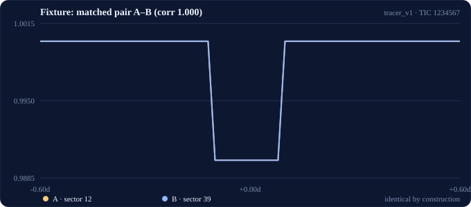
The matched pair, as the code sees them: two blink windows overlaid — identical U-shapes, correlation exactly 1.000.
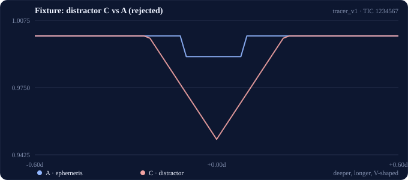
The impostor: same comparison, but blink C is deeper, wider, and V-shaped — rejected.
Step 2 — cross off orbits
33 suspects → 11 kept, 22 crossed off. Kept includes the true 300-day orbit. Every rejection names its reason: e.g. the 450-day guess demands a blink at day 1795, right when TESS was watching and saw nothing.
What it proves: matching, orbit listing, and calendar cross-checking work as one chain with human-readable reasons. Missing: real data — every blink here was invented.
Phase 2 · Real telescope data
The same chain, now pointed at genuine TESS recordings of three known hot Jupiters, downloaded from the space-telescope archive. Starlight is messy — different cameras, gaps, noise — and the code measures real dip shapes instead of perfect ones.
Demonstrated live (TESS-SPOC FFI light curves)
Each planet links to its NASA Exoplanet Archive entry — catalog data is where our star facts come from:
| Planet | Sectors | Blinks found | True pair | Shape score | Orbit suspects |
|---|---|---|---|---|---|
| WASP-43 b (TOI-656.01) | 9 + 35 | 49 | match | 0.948 | 26 listed |
| WASP-121 b (TOI-495.01) | 7 + 33 | 35 | match | 0.936 | 26 listed |
| KELT-9 b (TOI-1150.01) | 14 + 55 | 29 | match | 0.932 | 41 listed |
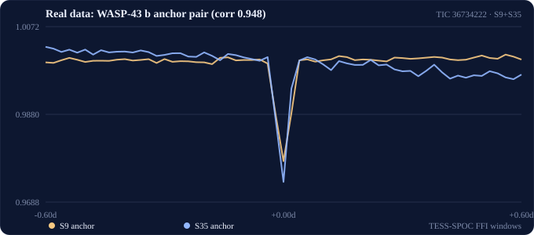
WASP-43 b, sectors 9 + 35 overlaid — same dip in noisy real starlight, 6 years apart in the catalog clock. Matched at 0.948.
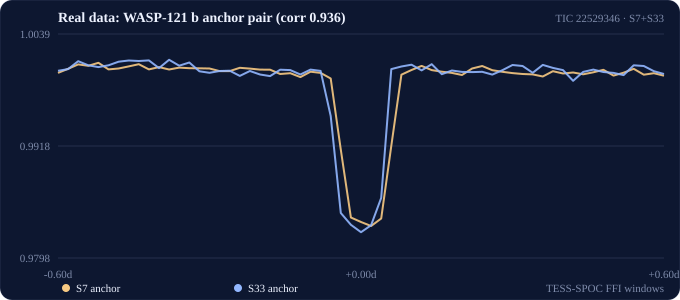
WASP-121 b, sectors 7 + 33 — matched at 0.936.
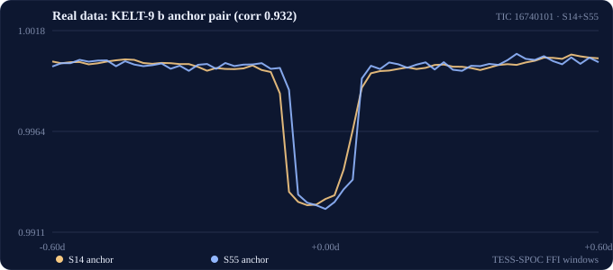
KELT-9 b, sectors 14 + 55 — matched at 0.932.
Every blink, up close
Each anchor blink on its own, exactly as measured — clean light curves with the numbers the matcher actually used:
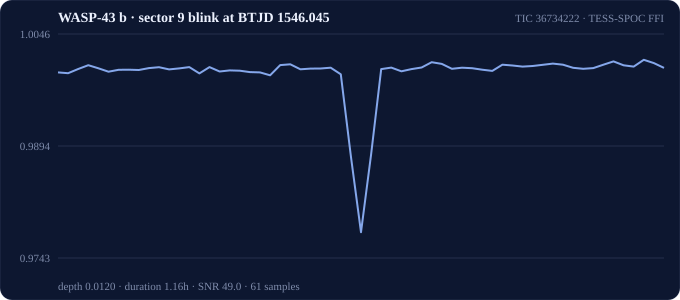
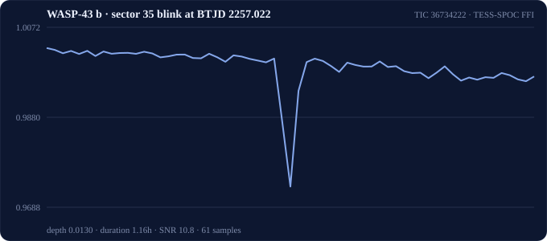
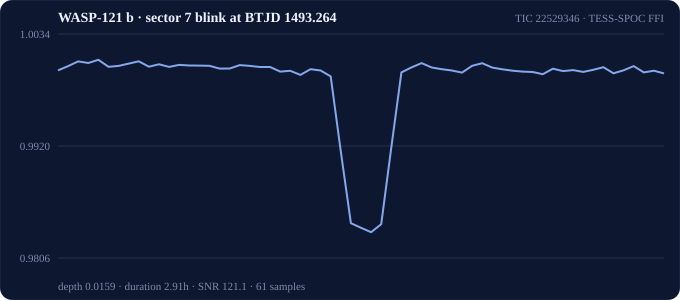
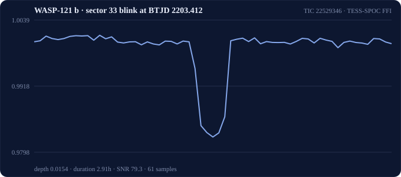
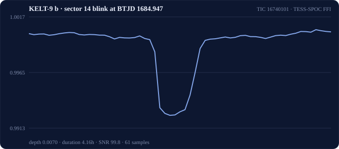
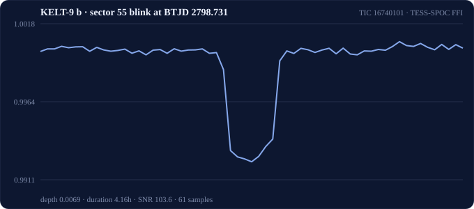
Depth, duration, signal strength and sample count are printed under each curve — compare the noisier 30-minute-cadence blinks (sector 9) with the crisp 10-minute ones (sector 35).
Fixed along the way, honestly: catalog clocks drift, so each sector's blinks are re-centered by a bounded shift (recorded, never hidden); camera glow differences between sectors are removed before shape comparison (WASP-43 sectors matched at only 0.82 before, 0.95 after — verified on real data, practice scores unchanged at exactly 1.0).
Known limit, stated plainly: these planets orbit in under 2 days, below the 27-day floor for orbit guesses — so this phase proves matching on real starlight, not orbit recovery. Recovering true periods needs long-period planets, scheduled for the blind exam phase. Raw telescope files live outside the repository; every record cites its archive file and download date.
Phase 3 · The blink-finder
Until now, a human told the code where the blinks were. The new blink-finder works blind: it smooths each star's recordings, flags every dip that stands out from the noise, and measures it — given no star maps, no orbit tables, nothing but light. On WASP-121 b it proposed 36 candidate blinks, recovering 34 of 39 known transits (recall 0.87 — 34 of 37 among transits with usable light, 0.92), and the true cross-year pair still matched.
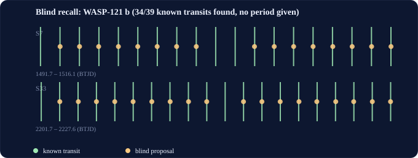
Green ticks: real blinks from the catalog clock. Gold dots: what the software found on its own. (Two sectors of WASP-121 b.)
Every blink's light, hits and misses
Full recordings for both sectors — green ticks are real blinks, gold dots are finds, red crosses are the five misses:
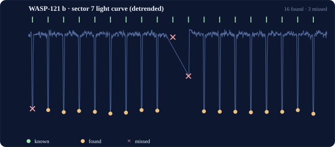
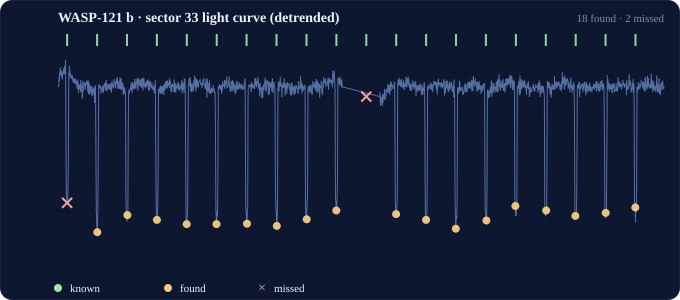
The dips are real; so are the gaps. Every miss has a measured explanation:
| Blink | Strongest signal nearby | Why it was missed |
|---|---|---|
| Sector 7, day 1492.0 | SNR 41.7, spotted | Dip hangs off the recording's edge — too little light to measure. Correctly left out. |
| Sector 7, day 1503.5 | no usable light | Spacecraft recorded nothing there (data gap). Nothing to find. |
| Sector 7, day 1504.7 | SNR 23.4, single point | The transit's own light was flagged suspect, leaving one good point — and one point is never enough to claim a blink. |
| Sector 33, day 2202.1 | SNR 22.7, spotted | Same edge story as the first: spotted, unmeasurable. |
| Sector 33, day 2214.9 | no usable light | Data gap again. |
Why this matters: from here on, failures come in two honest flavors the code tells apart — "never spotted" (blink-finder's fault) vs "spotted but wrongly paired" (matcher's fault). You can't fix what you can't attribute.
Known limit: the finder is deliberately trigger-happy — false alarms are expected and left for the matcher and calendar checks to weed out. Tuning that trade-off is a later phase's job.
Phase 4 · The scoreboard
Matching blinks is easy to claim and hard to prove — so we built an exam. Every pair of blinks gets a label: true pairs (same planet, different years) vs false alarms in three flavors (wrong timing, lookalike shapes, mismatched sizes), plus random pairings across different stars. Then everything is ranked by one deterministic score and graded separately per flavor — no flavor can hide behind another's easy questions.
Live results (blind blinks, 3 real stars)
| Candidates | Count | How they fared |
|---|---|---|
| True pairs | 618 | All ranked above every false alarm. Reviewing the top 618 finds all of them. |
| Random star pairings | 2,443 | Score 0.000 compatible — the matcher never blinks at strangers. |
| Bad-timing pairs | 594 | Rejected by the calendar check, as designed. |
| Lookalike shapes | 0 here | None occurred naturally on these quiet stars — honestly reported, not hidden. |
Fair grading: each star belongs to exactly one of three exam piles (train / practice / final), so the matcher is always judged on stars it never saw. The full answer key — star lists, telescope files, thresholds, pile assignments — ships with the results.
Known limit: orbit cross-checking removed zero suspects here — with 700-day gaps and no mid-span observations, there was nothing to contradict. The calendar check's power is proven on practice data instead.
Phase 5 · The learning matcher
The hand-written matcher now has a learned competitor: a small Siamese 1D-CNN that compares the two local blink shapes and optional scalar features. It sees no TIC identifier, and every star stays wholly inside one train, validation, or test pile.
What is measured
| Question | Answer from the code |
|---|---|
| Does learning beat the rules? | Same candidate pairs, same partitions, same ranking metrics, with an explicit operational stop/go decision. |
| Can the result leak star identity? | No — TICs group and split examples only; they are never model features. |
| Can a null result be reported honestly? | Yes — the decision records scope, sample size, recall, burden, and the reason to continue or pivot. |
The scoreboard, all three exams: on hot-Jupiter repeats the shape-only model cannot win by construction (identical shapes — timing alone separates pairs). On the injection rematch with deliberately shape-discriminable box-vs-V signals, the model reaches 1.00 per-pair threshold accuracy yet ranks at AP ≈ 0.002 — it learned the base rate ("always say no"), not the morphology, while the deterministic rules stay perfect per region. On sealed sector 82: model AP 0.586 and burden 523 vs rules AP 1.000 and burden 272. Three exams, three PIVOTs: the deterministic morphology-aware matcher remains the supported path.
Phase 6 · Injection drills
We now plant controlled transit-shaped dips into genuine TESS-SPOC FFI light curves from the development manifest, then send both modified sectors through the same blind proposer, event-record extractor, matcher, and alias/window code used elsewhere.
The operating grid
| Dimension | Values | Why it matters |
|---|---|---|
| Depth | 0.003 · 0.010 · 0.025 | Maps weak to strong signal recovery. |
| Morphology | box · V-shaped · mismatched | Same-shape repeats test recovery; cross-epoch box-vs-V pairs are deliberate shape negatives for the learned rematch. |
| Separation | same-epoch · cross-epoch | Timing-impossible negatives are separated from physically plausible repeat positives. |
Every result reports detection recall separately from conditional association recall. Each failure is labelled as a detection failure or association failure. The learned comparison also reports deterministic and learned correctness by depth, shape, and separation region — and ranking metrics (AP, burden) beside threshold accuracy, so a model that learns only the base rate cannot hide behind a 1.00 accuracy.
Audit trail: injection parameters, archive URI, local cache path, retrieval timestamp, thresholds, and random seed are preserved in the output contract. The run uses only sectors from the development manifest; no sealed-sector measurement or threshold is changed.
Verification: the real-data integration test exercises all three manifest systems, the full depth × shape grid, leave-one-TIC-out learned scoring, and JSON serialization. The repository suite reports 91 passed with one pre-existing archive warning.
Phase 7 · The blind exam
Before touching sealed data, the whole methodology was written down and hashed: source code, thresholds, model settings, proposer parameters, manifest files, star lists, and the trained model weights. Only KELT-9's sealed sector 82 could then be opened — through a gate that refuses without a matching freeze record — and the frozen code ran exactly as developed.
Sealed results (KELT-9 b, sectors 55 + 82)
| Measure | Result |
|---|---|
| Blink-finder recall | 33 of 36 real blinks (0.97 of measurable ones); the cross-year anchor pair associated. |
| Hand-written rules | All 272 true pairs ranked above every false alarm (burden 272 of 272). |
| Learned matcher | Burden 523, recall 0.05 at fixed false-alarm rate — loses on identical hot-Jupiter shapes, as predicted. |
| Orbit cross-check | Median alias reduction 0.00 — multi-year gaps leave nothing to contradict, honestly reported. |
| Exam verdict | PIVOT on 272 sealed positives: the deterministic baseline remains the supported path. |
Why this counts as blind: normal code paths still refuse sealed sectors; the sealed run carries its freeze hash, creation and unblinding timestamps, and an access-log entry. Thresholds are byte-identical before and after. No weight, rule, or threshold changed post-unblinding.
Verification: the sealed integration test retrains nothing at exam time, checks the frozen checkpoint hash, and serializes the full result. The repository suite reports 91 passed with one pre-existing archive warning.
Phase 8 · Hunting new worlds
The instrument is built; the sky isn't ready. Sector 106 finished observing on Aug 9, 2026, but the archive holds zero Sector 106 telescope files — the newest recordings available anywhere are around sector 82. So the discovery machine stands armed: frozen pipeline, Sector 106 pilot cohort picked (three known TOIs with early coverage, for validation-by-redetection), and a vetting chain proven live.
How a hunt will run
| Step | What happens |
|---|---|
| Freeze | Methodology hashed before any new data is touched — same machinery as the blind exam, separate record. |
| Search | Blind blink-finding in early + 106 recordings, early × 106 pairs ranked by the frozen rules. |
| Vet | Secondary-eclipse hunt, contamination check, TOI cross-match — only clean pairs become candidates. |
| Report | Candidates reported as candidates, never confirmed planets; manual pixel work listed per candidate. |
Proof it works today: a full rehearsal on real WASP-121 data runs the identical code path (flagged rehearsal, zero promotions), and the vetting chain correctly refuses to promote KELT-9 — a known planet — as a "discovery". When Sector 106 lands in the archive, the run is one command.
Verification: gate mechanics, vetting rules, shortlist logic, and the archive-blocked path are all tested. The repository suite reports 91 passed with archive warnings only.
Roadmap · what comes next
Head-to-head learned and deterministic scoring with TIC-level holdouts and a written stop/go boundary.
Plant fake blinks of different depths and shapes into real recordings and map detection versus association failures.
Freeze everything, then grade on sealed sector 82: rules rank all 272 true pairs first, learned matcher trails.
Machine built and rehearsed; Sector 106 has no archive files yet — the run triggers when they land.
Can't-do list (still true)
- No new planets yet — only known ones replayed.
- No planet-vs-impostor vetting — eclipsing binary stars need extra checks not yet built.
- No sealed exam yet — all current results are development or tracer-bullet checks.
python3 -m pytest -q # 91 passed
PYTHONPATH=src python3 -c "
from tess_assoc.pipeline import run_tracer, render_report
from tess_assoc.manifest import load_manifest_file
print(render_report(run_tracer(load_manifest_file('fixtures/tracer_v1.json'))))"